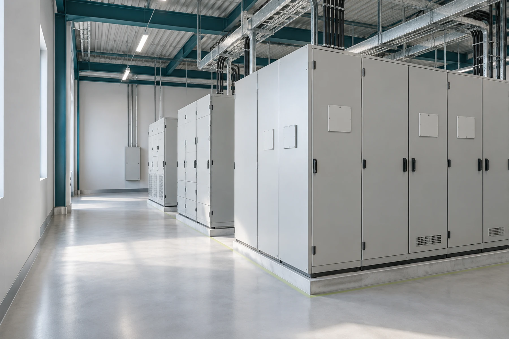

THOMAS株式会社
電気設備工事・プラント電気工事
電気の技術で、
安心と快適を支える。
受変電設備から一般電気工事、プラント設備まで。
確かな施工で、暮らしとビジネスの基盤を支えます。
A TRUSTED PARTNER
一件一件に、
誠実な仕事を。
OUR BUSINESS
電気と設備の力で、
空間の基盤をつくる。
PROCESS
ご相談から施工まで。
ご相談内容や現場の条件に合わせて、進め方をご案内します。
- 01
ご相談
工事内容やご希望をお聞かせください。
- 02
内容の確認
ご相談内容と現場の条件を確認します。
- 03
ご案内
工事内容に応じて、対応方法をご案内します。
- 04
施工
安全と品質を大切に、工事を進めます。
THOMAS CO., LTD.2024年
法人設立
大阪府守口市竜田通1-3-3
LET'S TALK
CONTACT